- 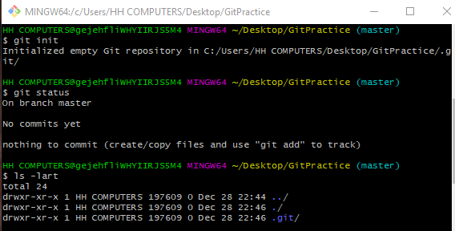
- 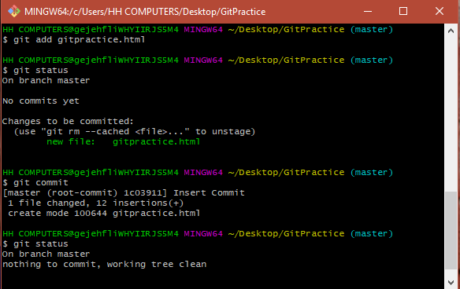
- 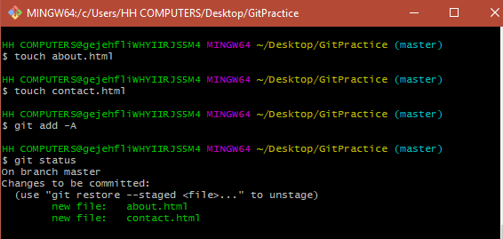
- 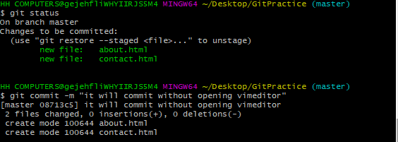
- 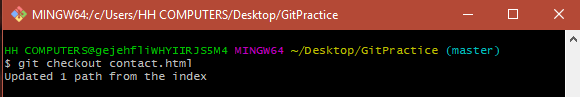
- 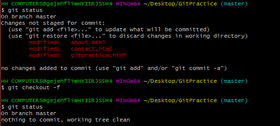
- 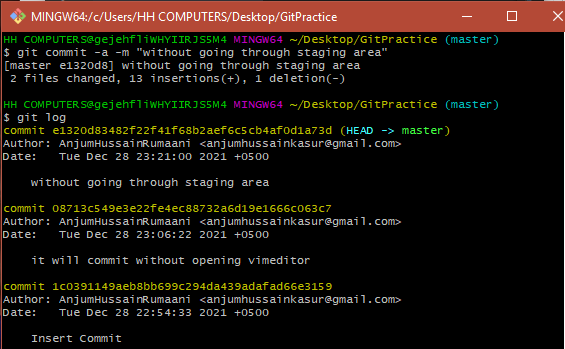
- 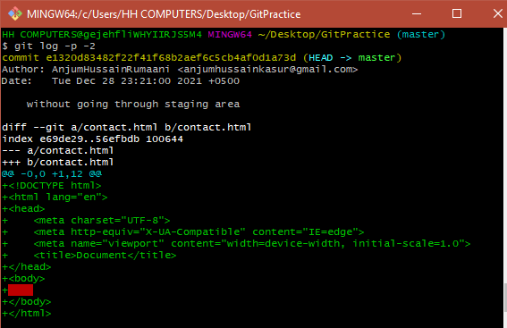
- 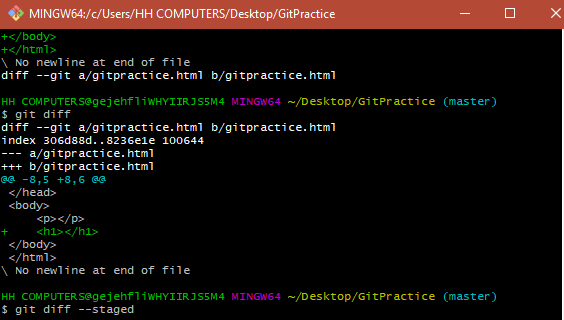
- 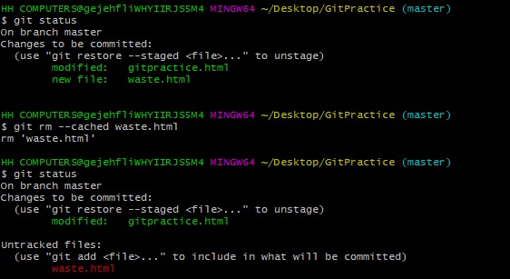
- 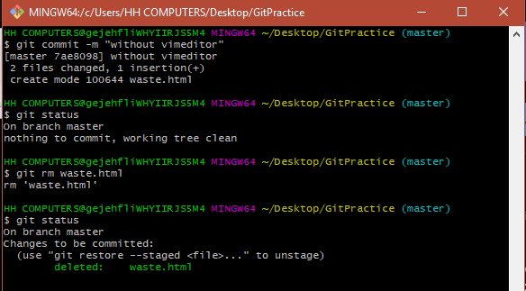
- 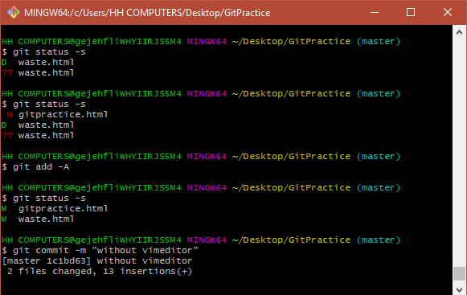
- 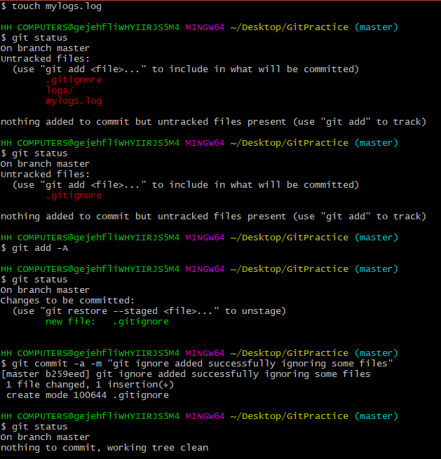
- 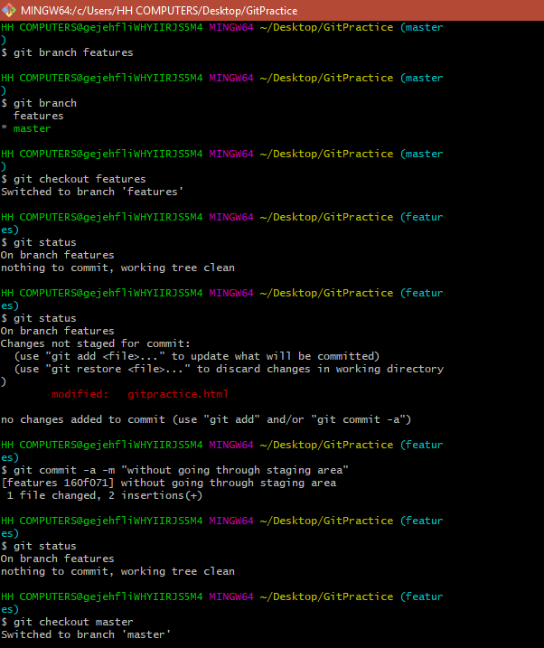
- 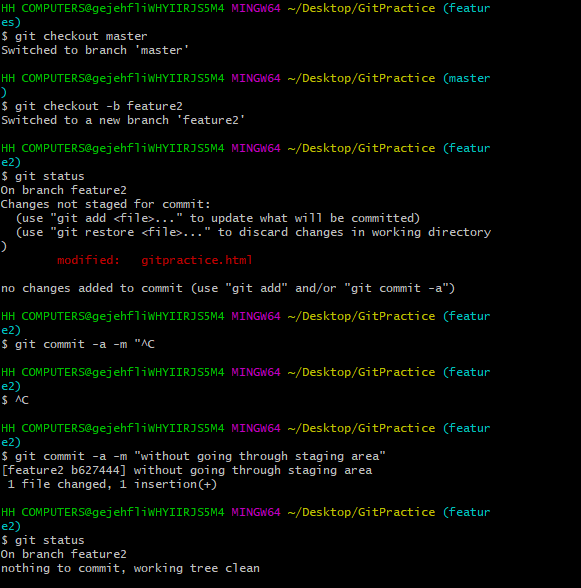
- 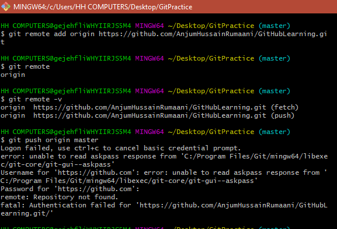
- 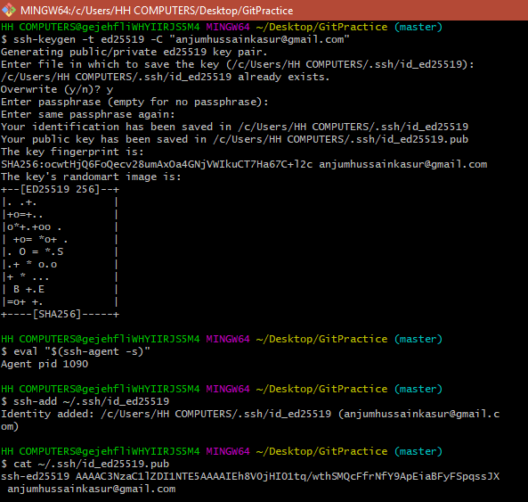
- 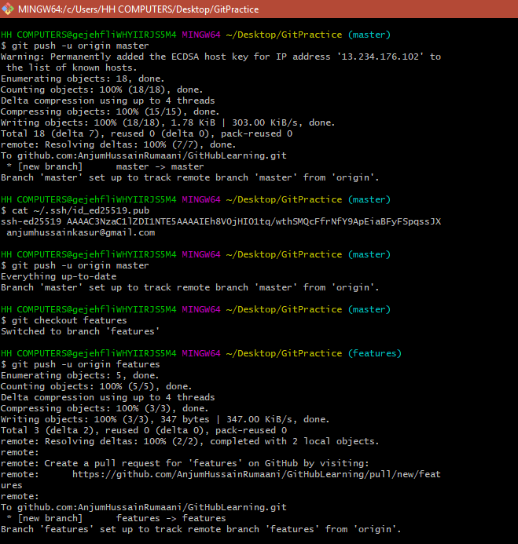
1,2
1: TO SET USERNAME AND PASSWORD
--------------------------------------
git config --global user.name NAME
git config --global user.email example@mail.com
2: TO \CHECK USERNAME AND PASSWORD
--------------------------------------
git config --global user.name
git config --global user.email
3,4,5
3: To initialize a repository:
------------------------------
$ git init
RESULT:
Initialized empty Git repository in
C:/Users/zee/Desktop/git in one video cwh/.git/
4: To check the hidden folders
--------------------------------
ls -lart
print the list of all folder including hidden folders
5: To check the git status
----------------------------
$ git status
RESULT:
On branch master
No commits yet
Untracked files:
(use "git add
6,7
6: To transfer the file from untracked to Staged
----------------------------------------------
git add "git commands and notes.txt"
7: To commit the staged files
(To transfer file from staged state to unmodified state)
------------------------------------------------------------------------------------
git commit
RESULT:
Vim editor will be opened
1: press i to INSERT
2: Write the commit notes ("Initial Commit")
3: Press 'ESC' and now type ':wq' and press Enter
4: Now run 'git status' command
8
8: To add more then one files from untracked to staged then press:
------------------------------------------------------------------
git add -A
1. Now if you check the status you will see that files are now
in staged area and now you can commit the files to shift them
in unmodified phase.
2 Note: if you edit a already have a file in unmodified phase
and edit it then it is now in modified phase and not you will
have to shift to staged and then commit phase to take it back
to the unmodified phase.
9
9: git commit -m "Enter your message here about the commit"
--------------------------------------------------------------
It will commit the changes without opening the vim editor
10.1
To take your modified file to the last commit stage (like :Ctrl+Z)
-----------------------------------------------------------------------
git checkout Filename
10.2
To take your modified file to the last commit stage (like :Ctrl+Z)
-----------------------------------------------------------------------
git checkout -f (To checkout all files at once)
11,13
11: To view All the commits
-------------------------------------------
git log //show all the commits
(press q to exit from git log)
13: To directly commit all modified staged files without adding
them to the staged area (note: you must have to add all the
files to the staged area at least once when you create them
and next time you can commit it after changes in it without
staging it.
--------------------------------------------------------------------------
git commit -a -m "Type the commit message here"
11.1
11: To view All the commits
-------------------------------------------
git log -p -5 note: // show last 5(or any number you write) commits and also show the changes that were made
12
12: Compare the working stage from the staged area
----------------------------------------------------
git diff
git diff --staged // compared staged stage with last commit
14.1
14: To remove some file from the commit
----------------------------------------------------
git rm --cached Filename //File will be removed from the staged and now it is untracked.
14.2
14: To remove some file from the commit
----------------------------------------------------
git rm Filename //Completely delete a File
15
15: To check a short form of git status
-----------------------------------------------------
git status -s
//red M shows in first column shows modified in working area
//Green M shows in second column shows file is added Staged area
// Green M in first column and Red M in second
column shows staged file is edited and now in untracked stage
16
16: To ignore a file by git that git don't
track a or multiple files
--------------------------------------
1). Create a file with name .gitignore
(note: create it from touch command i.e.
touch .gitignore
Because if you try to create it through the
windows explorer then OS will save it and consider
it like a file with empty name and .gitignore
extension
)
2). Write the names of files in .gitignore file which you want
to be ignored in this project directry and add this file to
the staged area.
3). Whether that file is in same folder or in some child or
grandchild folder or up to so on , that file or the all files
with same name in any sub folder of the main project folder
will be ignored.
-> igonore.log // will ignore all the ignore.log from all the
sub folders
-> *.log //will ignore all the files with extension .log
-> ignore/ //ignore all the files in ignore folder
17.1
17.1) Git Branch
--------------------------------------
To create a branch
git branch Feature1
// A branch with the name Feature1 will be created
// By default you are in master branch (your main project)
To switch between a branch
git checkout feature1
//you will be switched to feature1 branch (copy of your master branch)
17.2
17.2) Git Branch
--------------------------------------
To create and switch a branch at once, then run
-> git checkout -b features1
features1 is the name of new branch
18
18). To add the remote directory to your local directory
---------------------------------------------------------
-> First create a github account
-> Create a New Repository(remote repository)
-> git remote add origin https://github.com/reponame/git-in-one-video.git
(Copy and paste it in git bash and your git repository will be added as 'origin'
-> Now run "git remote" to check the remote repository.
-> git remote -v // will show the url of origin as well
-> git push origin master (push the master branch to origin)
--> note : it will not work if remote directory is private.
-> Now you will have to generate an SSH key and add it to your master directory and then push
-->ssh-keygen -t ed25519 -C "example@gmail.com" // SSh key will be generated and saved in a file
-->eval "$(ssh-agent -s)" // produce agent process id
Agent pid 4652 // in my case agent pid
*we have added ssh private keey to ssh-agent
-->cat ~/.ssh/id_ed25519.pub //your ssh key will be produced
-->Copy it and paste it on your remote repository
settings->SSH key and GPG keys -> click new SSH key
--> git push -u origin master //will push your repository to github remote repository you created.
--> Only master branch will be pushed
--> To push other branch as well first
- switch to that branch i.e. git checkout feature1
- git push -u origin feature1